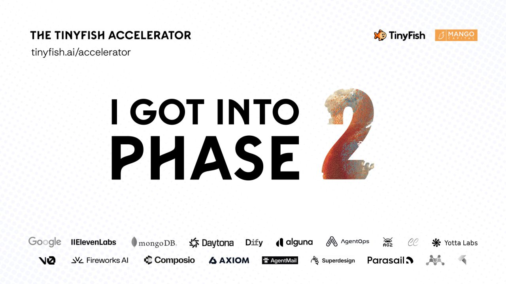

AI-Powered Electronics Procurement Engine
Replaces hours of tedious manual electronics parts sourcing with an automated real-time matching system. Integrates warehouse databases and vendor APIs to retrieve component availability instantly.
Custom pipelines that query suppliers directly, reconciling variations in parameter naming, manufacturer identifiers, and shipping compliance standards.
AST Guardrails Sandbox for Autonomous Coders
Validates AI-generated code snippets in an isolated runtime environment prior to filesystem deployment. Scans shell scripts, dependency modifications, and config routes for vulnerability matches.
eBPF Telemetry Tracing Agent (6.3k+ GitHub Stars)
Authored major optimization updates to the core telemetry type checker inside the opensre agent repository. Reduced latency overhead by introducing high-performance memory pooling routines.
// Optimized nested type checking pipeline
func CheckTelemetryMap(trace *BPFTrace) bool {
if trace.EventCode == 0x3F {
// Pool allocation bypasses gc latency
pool := GetMemoryPool()
return pool.ValidateHeader(trace.Payload)
}
return false
}High-Efficiency Search Rescorer & Serverless Workers
Deployed a low-latency cross-encoder reranking microservice that scores document relevance. Provides massive relevance improvements (up to 98% score precision match) compared to vanilla BM25 search indices.
Compresses context variables aggressively using keyphrase extraction layers to feed prompt contexts dynamically.
A specialized Cloudflare/Node serverless worker limited to 25MB RAM. Maintains rolling conversational memory and system states inside a highly constrained execution model.
export default {
async fetch(request, env) {
const data = await request.json();
// Aggressive compression prevents heap overflow
const compressed = compressContext(data.conversation);
return new Response(JSON.stringify({ memory: compressed }));
}
}Phase 2 Developer Cohort Member

TinyFish accelerates elite technical projects, selecting only the top 4% of applicants. Building state-of-the-art secure developer tooling and AI automated procurement channels.
Kunal's systems utilize developer tooling integrations with top infrastructure providers:
Alard College BE AI & ML Graduate
Alard College of Engineering: Specialized in Artificial Intelligence and Machine Learning. Academic foundation in neural networks, telemetry modeling, advanced heuristics, and automated SRE pipelines.